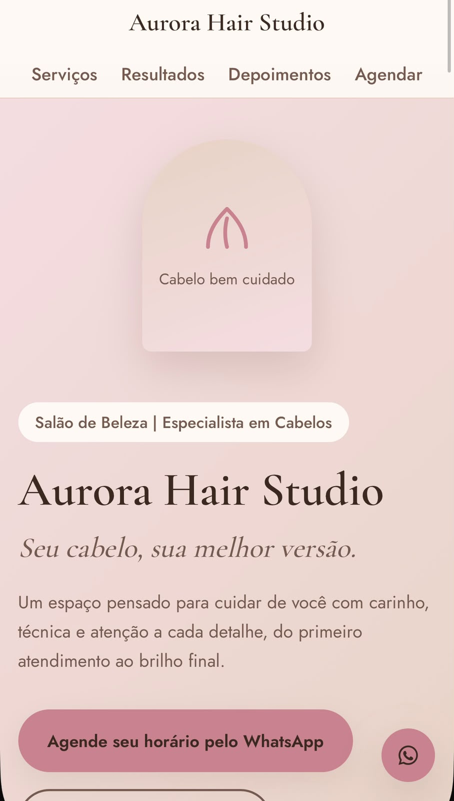
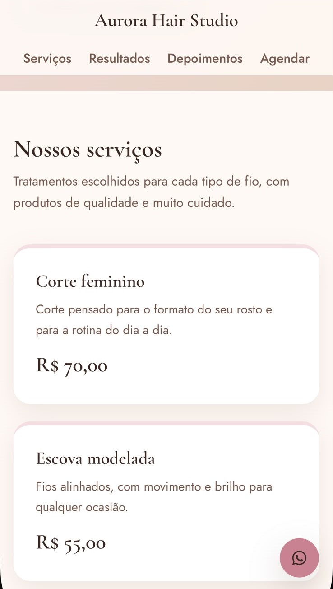
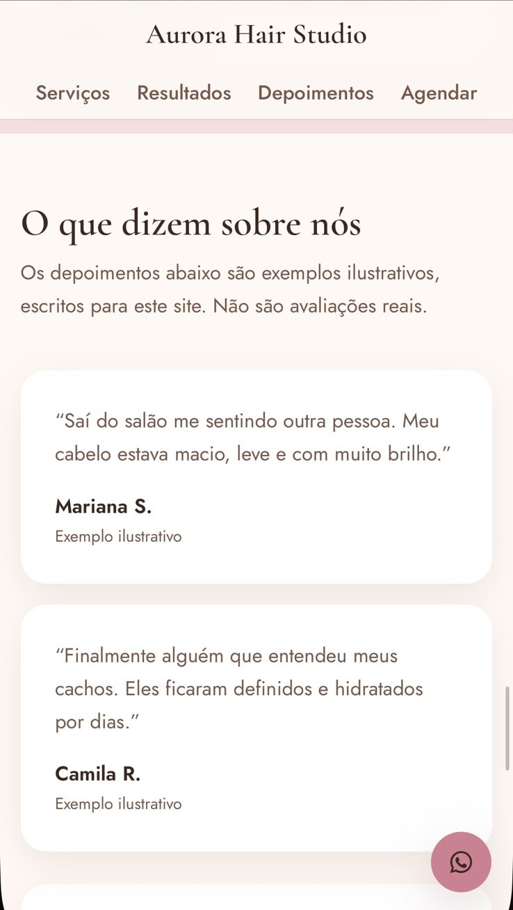

PORTFÓLIO · DESENVOLVIMENTO WEB
Fábio Santos
Transformando ideias em soluções digitais.
Sou desenvolvedor web e estudante de Análise e Desenvolvimento de Sistemas. Crio experiências digitais que ajudam negócios a apresentar seu trabalho, organizar informações e se conectar com clientes.
Por trás do código
Projetos selecionados
Sites de demonstração e aplicativos que desenvolvi para mostrar, na prática, como posso ajudar o seu negócio.
PROJETO DEMONSTRATIVO · SALÃO DE BELEZA
Aurora Hair Studio
Seu cabelo, sua melhor versão.
Uma experiência digital conceitual para um salão especializado em cabelos, com identidade visual delicada, tons rosados e neutros, apresentação de serviços e caminhos claros para o contato.
- Identidade visual em rosa-claro, nude e creme
- Seções de apresentação, serviços e depoimentos demonstrativos
- Layout responsivo e contato pelo WhatsApp



O vídeo não carregou. Confira se media/aurora-demo.mp4 está na pasta media.
Dica: no celular, toque em “Assistir em tela cheia” para ampliar a demonstração e ler melhor os detalhes.
PROJETO DEMONSTRATIVO · RESTAURANTE
Maison D’Or — Cardápio digital
Uma experiência digital para um restaurante de gastronomia contemporânea, com apresentação elegante dos pratos, descrições e preços. O cardápio organiza as opções por categorias e facilita a consulta tanto no computador quanto no celular.
O vídeo não carregou. Confira se media/maison-dor-demo.mp4 está na pasta media.
Demonstração do site Maison D’Or, incluindo a navegação pelo cardápio e a apresentação dos pratos.
Voltar aos projetosVeja um projeto em funcionamento
Um aplicativo de controle de encomendas, em uso.
Desenvolvi um aplicativo para controlar encomendas de produtos com muita saída, como as vendas feitas em marketplaces. Em vez de depender de anotações soltas, o vendedor organiza tudo em um só lugar.
- Cadastro de cada encomenda com produto, cliente, WhatsApp, plataforma de venda, datas e endereço.
- Consulta por cliente, código ou bairro, com separação entre encomendas em aberto e entregues.
- Agrupamento das encomendas por região.
- Acompanhamento de prazos, com destaque para as atrasadas e as que vencem hoje ou amanhã.
- Interface própria para uso no celular.
Além deste, posso criar outras soluções voltadas à administração do seu negócio, como controle de pedidos, clientes e prazos, de acordo com a sua rotina. O escopo é combinado individualmente.
media/demo.mp4 está na pasta.Serviços
Soluções simples e bem acabadas para quem quer uma presença digital clara.
Hospedagem, domínio, manutenção, integrações e funcionalidades mais complexas não estão incluídos automaticamente. Cada item é combinado individualmente, de acordo com a necessidade do negócio.
Como funciona
Vamos tirar sua ideia do papel?
Se você tem um negócio, um projeto ou uma ideia que precisa ganhar vida na internet, vamos conversar.